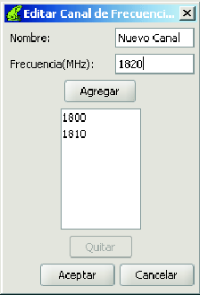

Siguiente: Cómo editar un canal
Subir: Los canales de frecuencia
Anterior: Los canales de frecuencia
Índice General
Hay dos caminos diferentes por los cuales se puede crear un canal:
- Desde la barra de menú:
Menú Proyecto
 Crear Canal de Frecuencias
Crear Canal de Frecuencias
- Desde explorador de antenas, haciendo click con el botón derecho del mouse en el
nodo CANALES disponibles (nodo raíz):
Agregar Canal
Cualquiera de ellos conduce a la ventana de la figura
10. Luego de agregar todas las frecuencias
clickear en Aceptar.
Figura 10:
Ventana para la creación/edición de un canal de
frecuencias
|

|
El canal creado se agregará al explorador.
SAPO